Обучение рисованию пиксельной графики
для начинающих
Что ж, если вы находитесь здесь, значит вы просмотрели
все
работы мастеров и готовы попробовать сами.
Что это и зачем это ?
Пиксель арт – это изображение, нарисованное пикселями (квадратами). Пиксель-арт появился на свет из необходимостит. т.к. старые приставки и автоматы не могли создавать что-то сложнее мозаики из квадратных точек. Между тем, компьютерная графика уже требовалась.
Сначала это были чёрно-белые, потом с палитрой из 4 цветов и дальше по нарастающей. С увеличением мощностей увеличивается количество пикселей на экране. Со временем пиксель арт теряет популярность, уступая место 3D и векторной графике. Однако с приходом Terraria, Undertale, Fez, Hotline Miami и много других, пиксель арт получил надежду на возрождение. У него появилась своя база поклонников и много художников начало развиваться в этой области. Поэтому я пишу эту статью, чтобы облегчить путь новичкам, желающим начать рисовать пиксель арт.
Про нетрадиционные способы рисования
-
Сейчас есть очень много способов создания пиксель арта, которые могут быть легче, чем традиционный. Например, как в игре Dead Cells. Художники создали 3D модель, после экспортировали в. png с дальнейшим ухудшением качества, чтобы выглядело «пиксельно». Это сделано дабы уменьшить затраты времени и денег на прорисовку большого количества кадров.
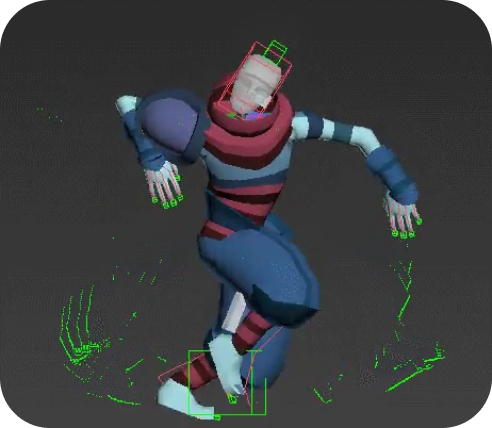 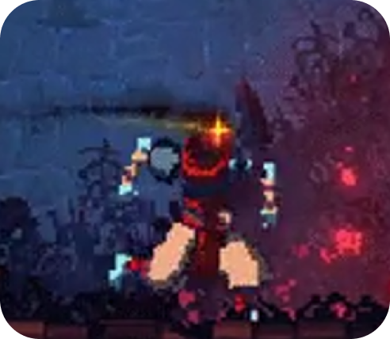 -
Другой способ, который придумали художники дабы сэкономить время – это ухудшение качества обычной картинки и её дальнейшая обработка. Очень удобен, ведь не нужно с нуля продумывать позу, свет, пропорции и т. д.
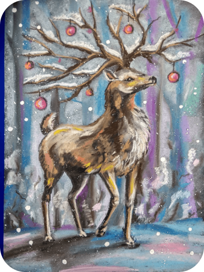 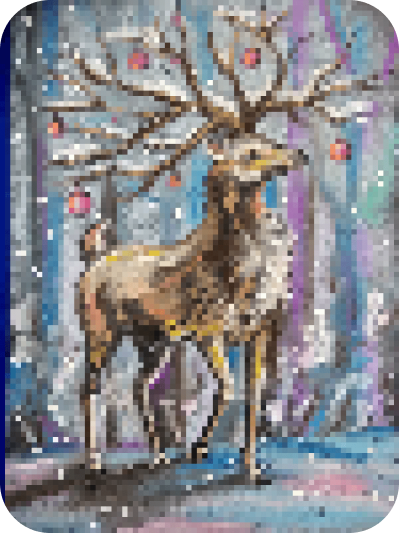
Программы и компоненты
Программ для рисования множество, но мы выделим несколько из них:
-
Aseprite: отличный профессиональный редактор со множеством функций, позволяющих сэкономить время. Считаю лучшим выбором для новичка (платно).
-
GraphicsGale:классика, используемая во многих играх. Это немного сложно, но полно замечательных функций (бесплатно).
-
Piskel:Онлайн-редактор пиксельной графики (бесплатно).
-
Photoshop:мощный редактор изображений, не предназначенный для создания пиксельной графики, но вы можете настроить его для использования (очень платно).
Говоря про техническую составляющую, то можно выделить возможность «нормального» рисования мышкой, однако графический планшет сэкономит ваше время, да и облегчит рисование громоздких изображений.
Основные принципы рисования:
Уточним, что принципы не обязательны для исполнения, однако их соблюдение поможет разобраться с основами и приступить к экспериментированию и наработке своего стиля рисования.
-
Линии и их рисование в пиксель арте. Идеальная линия в пиксель арте имеет ширину всего 1 пиксель и соединяется по диагонали с другими пикселями. Делая такие линии, мы избегаем непреднамеренных краев, как здесь:
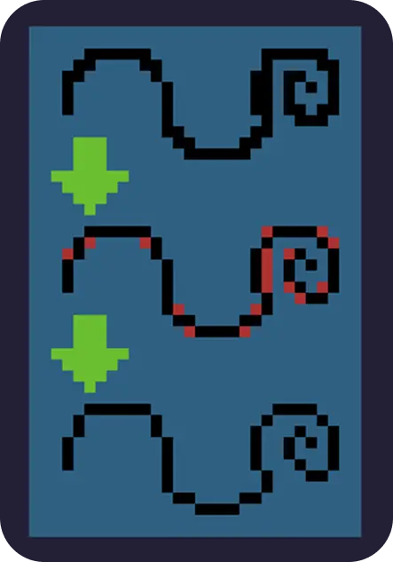Хочется сказать, что в Aseprite есть функция Pixel-perfect. Она будет полезна для того, чтобы понять как это работает.

-
Неровность (jaggies) — небольшие разрывы в линии, из-за которых линия выглядит неровной. Чтобы этого избежать нужно следить за тем, чтобы при уклоне, кол-во пикселей уменьшалось (или увеличивалось) на всем промежутке изгиба. В данном примере 6 > 3 > 2 > 1 идет уменьшение, а в другом 3 > 1 < 3, что неправильно.
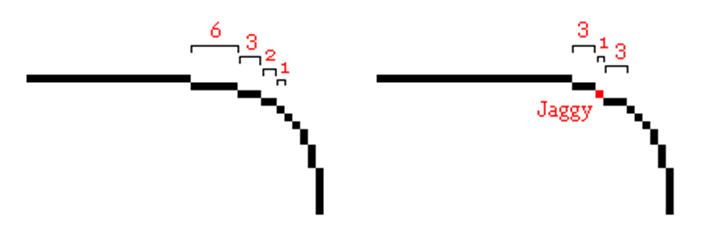 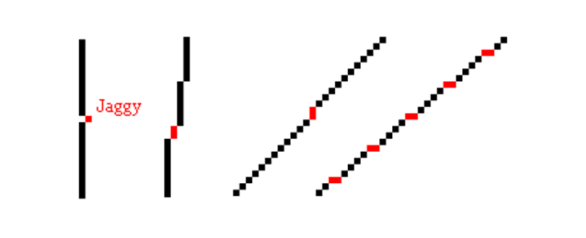 -
Ограниченная палитра. Этого можно не придерживаться, но хорошая вещь того, что у вас мало цветов на выбор, заключается в том, что вы не будете перегружены слишком большим количеством вариантов. Вот почему намного сложнее работать с большим количеством цветов. Если у вас есть цвет в вашей палитре, нет никаких оправданий тому, чтобы не использовать его на максимум. Попробуйте думать об этом как о головоломке, много экспериментируйте, даже со странными или необычными комбинациями, пока не найдете то, что, по вашему мнению, является «лучшим соответствием» для каждой области. Некоторые сайты имеют большое количество палитр, которые можно скачать.
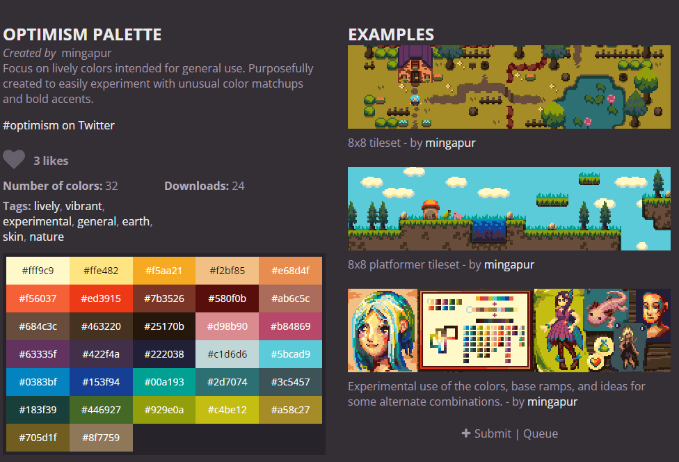 -
Дизеринг (Dithering). Это способ получить больше теней без использования большего количества цветов. На маленьких изображениях он плохо смотрится из-за важности каждого пикселя на рисунке. Также покажем пример его использования.
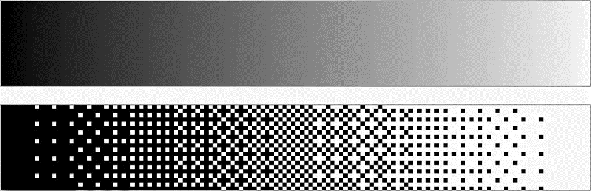 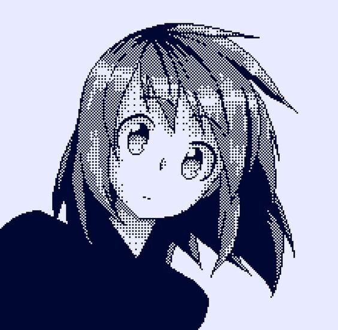 -
Одиночные пиксели или рисование класетрами. Уместна будет эта картинка.
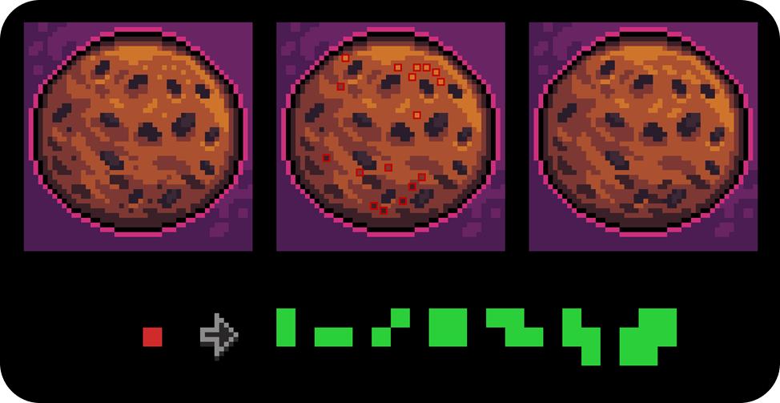Здесь показаны одиночные пиксели, которые в отличие от дизеринга просто создают шум в рисунке, а также показаны варианты замены кластерами (группой пикселей). Идея состоит не в том, чтобы не бездумно удалять бесхозные пиксели, а перебрать их и спросить себя: действительно ли этот пиксель должен быть один?
-
Шейдинг (shading) — выставление света. В пиксель арте оно довольно ограниченно. Подавать свет прямо нельзя т. к. будет теряться форма объекта, поэтому его зачастуделают с боку и сверху.
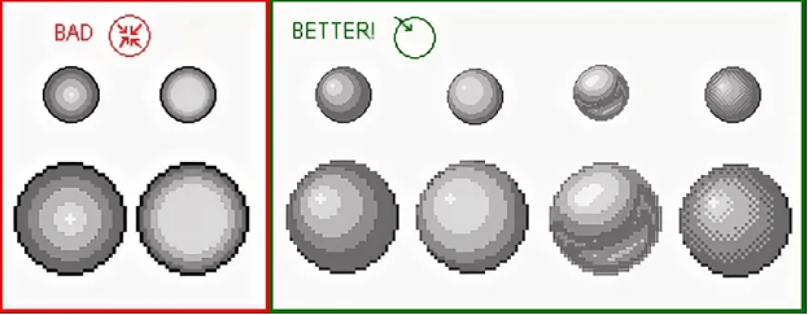
Приступим к работе
-
Возьмем размер 32x32. Заранее взяли палитру, которую собираемся использовать здесь. Для начала набросаем контур так, чтобы было примерно понятно, что рисуем. Выбор пал на яблоко.
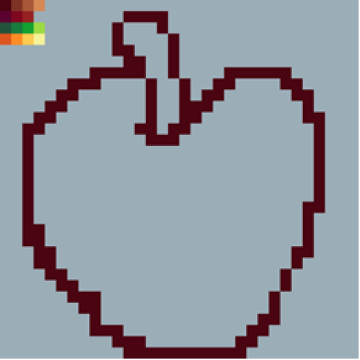 -
После этого сразу редактируем контур, убирая ненужные пиксели.
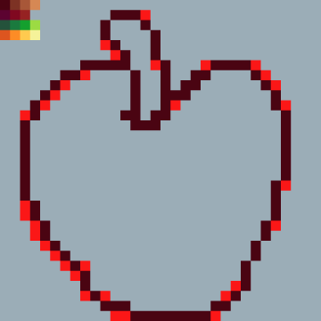 -
Это было сделано так, чтобы линия была в 1 линию. Форма несимметрична, но ей и не нужно такой быть.
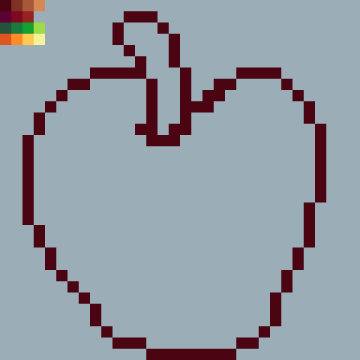 -
Дальше заполнем основными цветами, представляем где свет и рисуем первые наброски тени и полутени. Я решил, что листик этому яблоку не помешает.
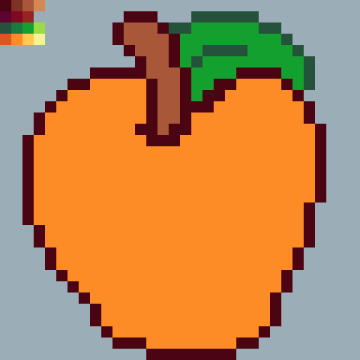 -
Однако стоит помнить, что 3 оттенка более чем достаточно для большинства рисунков. Добавление большего количества оттенков делает пиксель-арт более грязным и шумным. Было решено сделать тень, полутень, основной цвет и блик.
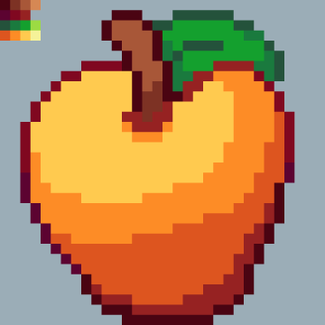 -
После теней выставляем блики. Здесь ничего особенного. Сначала выставляем приблизительно, а после уже из этого начинаем работать над корректировкой.
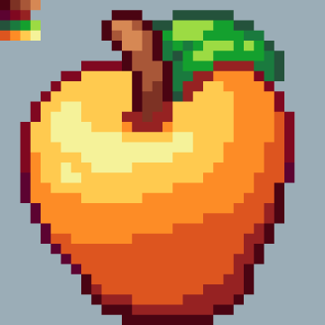 -
Дальше начинаются игры со светом в надежде на получение объема. Получилось так. Если вы перфекционист, то вам придётся нелегко т. к. на эксперименты со светом вы потратите очень много времени. Здесь важно научится вовремя остановиться, посмотреть на ошибки и, получив опыт, начать работать над новым рисунком.
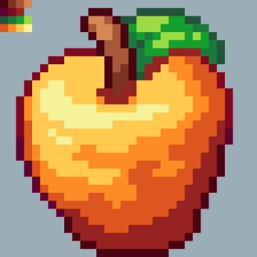
Что дальше ?
Безусловно здесь рассказано очень мало, но этих знаний достаточно для маленького рисунка. Дальше развитие, эксперименты с цветами, формами и просто постоянная практика. Стоит начать с небольших рисунков (16x16, 32x32), чтобы подкрепить азы. Кроме того, важно делиться своим творением с другими. Социальные сети такие как: Twitter, Instagram, Pinterest, Reddit и т. д. дадут возможность получить критику, а значит пути развития вас как художника. Пиксель арт легок на старте, но сложен в развитии, поэтому так важен взгляд со стороны. Кроме того стоит посмотреть за другими авторами и за тем, как они работают.